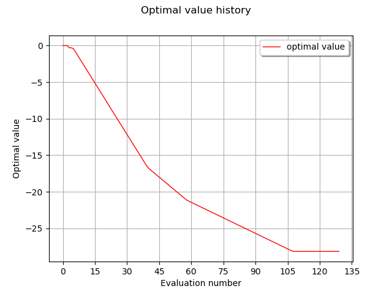

Note
Go to the end to download the full example code
Optimization with constraints¶
In this example we are going to expose methods to solve a generic optimization problem in the form
![\min_{x\in B} f(x) \\
g(x) = 0 \\
h(x) \ge 0]()
import openturns as ot
import openturns.viewer as viewer
from matplotlib import pylab as plt
ot.Log.Show(ot.Log.NONE)
define the objective function
objective = ot.SymbolicFunction(
["x1", "x2", "x3", "x4"], ["x1 + 2 * x2 - 3 * x3 + 4 * x4"]
)
define the constraints
inequality_constraint = ot.SymbolicFunction(["x1", "x2", "x3", "x4"], ["x1-x3"])
define the problem bounds
dim = objective.getInputDimension()
bounds = ot.Interval([-3.0] * dim, [5.0] * dim)
define the problem
problem = ot.OptimizationProblem(objective)
problem.setMinimization(True)
problem.setInequalityConstraint(inequality_constraint)
problem.setBounds(bounds)
solve the problem
algo = ot.Cobyla()
algo.setProblem(problem)
startingPoint = [0.0] * dim
algo.setStartingPoint(startingPoint)
algo.run()
retrieve results
result = algo.getResult()
print("x^=", result.getOptimalPoint())
x^= [5,-3,5,-3]
draw optimal value history
graph = result.drawOptimalValueHistory()
view = viewer.View(graph)
plt.show()
